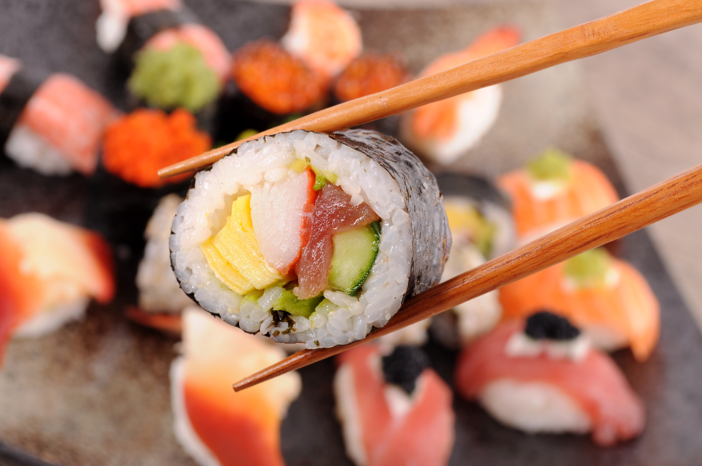

Somos Sushi Fast
Te traemos la mejor comida japonesa hecha por los mejores chefs de argentina , con atencion rapida para que uses tu tiempo en disfrutando de una excelente experiencia culinaria y no esperar por el pedido.Hay muchos platillos fuera de lo comun que te sorprenderán, pero tambien encontraras tus platillos favoritos de la comida japonesa.
